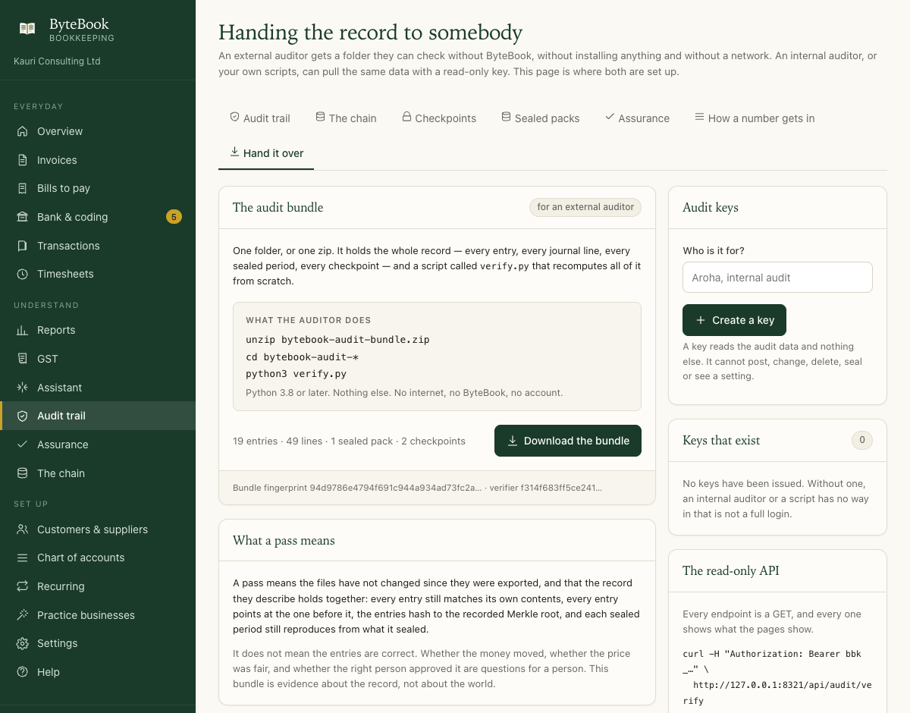

Bookkeeping for New Zealand businesses
Invoices, GST, expenses, bank import and reports. On your own computer. Twelve practice businesses come with it, already trading.
macOS app · works offline · no account, no cloud

Three everyday jobs
Each clip below is the real app, about three seconds long.
Send an invoice
Choose a customer, add the lines, post it.
- Prices can include GST or have it added
- Save it as a draft, or put it in the books now
Code the bank statement
Drop in a CSV from your bank. ByteBook suggests an account for each line, and you confirm it.
- Enter the closing balance and it checks the books against the statement
- Lines are skipped if you import the same file twice
Work out GST
Pick a period. The return fills in from your transactions.
- Every box traces back to the entries behind it
- Save a snapshot before you file, so it can be checked later
Four things a spreadsheet cannot do
Run the assurance checks
Sixteen procedures run on the real entries every time you open the page. Each one reports what it found and gives you a working paper.
- Ledger integrity, double entry
- Bank, debtors, creditors, GST reconciliation
- Manual journals, duplicate payments, cut-off, documents, expenses
- Sealed packs, access, and a recalculation of the reports
- Whether anything is missing from the record, and who entered, voided and worked out of hours
Check the record has not changed
Every entry carries a fingerprint that includes the one before it. Change an old number and the chain shows it.
- Voiding a mistake does not break the chain. Editing the original does
- Verify the whole chain, or click one entry to read it
Seal a period
Seal a month or a GST period. The fingerprint covers every entry and figure inside it.
- Verify it later to prove the period has not moved
- Backdating an entry into a sealed period fails the check
Hand it to somebody who checks it themselves
Each time the record is verified, ByteBook writes down what it said: how many entries, the last fingerprint, and the root of the whole ledger. Keep the receipt.
- A receipt is two dozen lines you can email to your accountant. Paste it back in later and ByteBook says whether the books still match it
- Export the whole record with a script that recomputes it: Python 3.8, nothing else installed, no internet, no ByteBook
- A read-only key lets an auditor's own tools read the same figures, and every read is written to an access log

A real business to practise on, already trading
Twelve of them ship with the application. Open one and the books are months old: invoices sent and chased, a bank statement coded, GST filed, one or two mistakes that somebody had to fix. Each has a paragraph on what it teaches and four things to try. Nothing you do in one can touch a client's records.
| Business | GST | Return | What it practises |
|---|---|---|---|
| Bright Cuts hairdressing | No | — | Books with no GST anywhere |
| Kōwhai Advisory consulting | Yes | Monthly, payments | A late payer, and GST that follows the money |
| Tasman Builders construction | Yes | 2-monthly, invoice | Stage payments on one contract |
| Harbour Cafe hospitality | Yes | Monthly | Daily takings banked in a lump, and a deposit that covers more than one day |
| Loom & Light online retail | Yes | 2-monthly | Refunds that reverse a sale |
| Marine Parade Rentals property | Yes | 2-monthly | Rent that carries no GST, and repairs you cannot claim it on |
| Whirinaki Contracting horticulture | Yes | 6-monthly | A long return period |
| Foundry Labs software | No | — | Costs only, no revenue yet |
| Marine Parade Dental health | Yes | Monthly | Passwords and four roles |
| Ngata Plumbing trades | Yes | 2-monthly | A busy bank statement |
| Pacific Trading wholesale | Yes | 6-monthly | Imports, and a balance date that is not 31 March |
| Precision Engineering engineering | Yes | 2-monthly | Amounts that break careless rounding |
Your books stay yours
A practice business is a separate set of books kept beside your own. Choosing one opens it; Back to my books opens yours again, and a line across the top of every page says which one you are looking at. Work you do is kept until you start over.
Built by running them
Each practice business is produced by driving the real application through a year of that trade and then checking the books from the raw rows. One command does it for all twelve, which is also how the program is tested.
Four roles
Owner, general manager, accountant, auditor. The last two can read everything and change nothing. Adding a role needs the owner's password.
And your own books, from a file
Open a bytebook.db — a backup from another machine, or a set
of books somebody sent you — as its own business, leaving everything else
where it is.
Every rule behind the handbook is named
So you can check it yourself.
Where they come from
New Zealand's accounting and auditing standards, published free by the External Reporting Board, and the IAASB Handbook, published free by IFAC.
What we publish
References, and short quotes with the paragraph named. Not the standards themselves — they stay with their publishers, and the link goes to them.
Read it here
Twenty-three chapters. Turn the page, or open it on its own.
Use the arrows to turn the page. Every citation opens the standard, the paragraph and the document it was checked against. The whole book on one page prints to a clean PDF.
Who it is for
- Accounting and audit firms training staff on a business that behaves like a real one.
- Small businesses that want their books on their own computer.
What it does not do
- It works out GST from what you code. It does not decide whether a supply is taxable.
- It prepares tax working papers. It does not file them.
- It reports what is in the books. It does not draw the conclusion.
One SQLite file holds the books. The
app listens on 127.0.0.1 only, keys go in the macOS Keychain, and the
optional assistant is off by default.